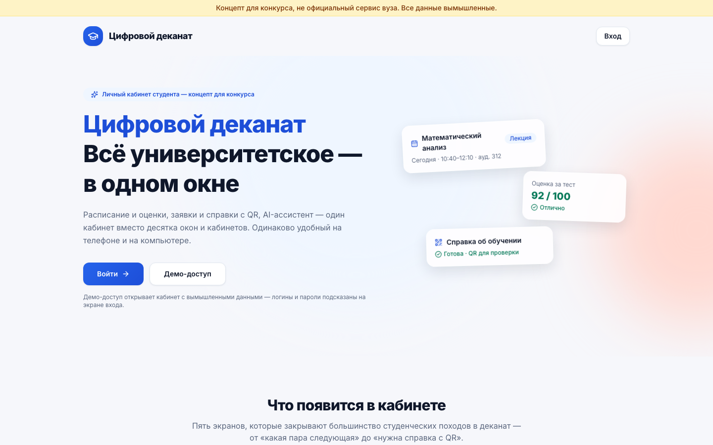
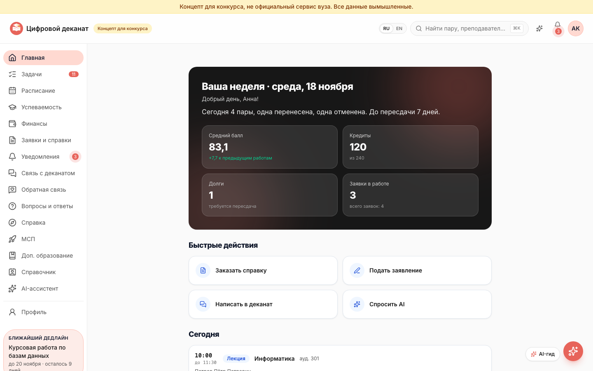
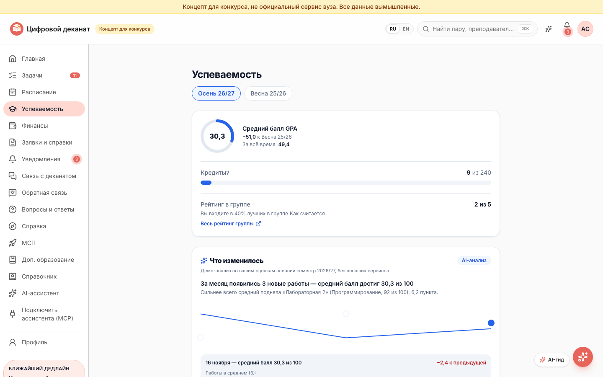
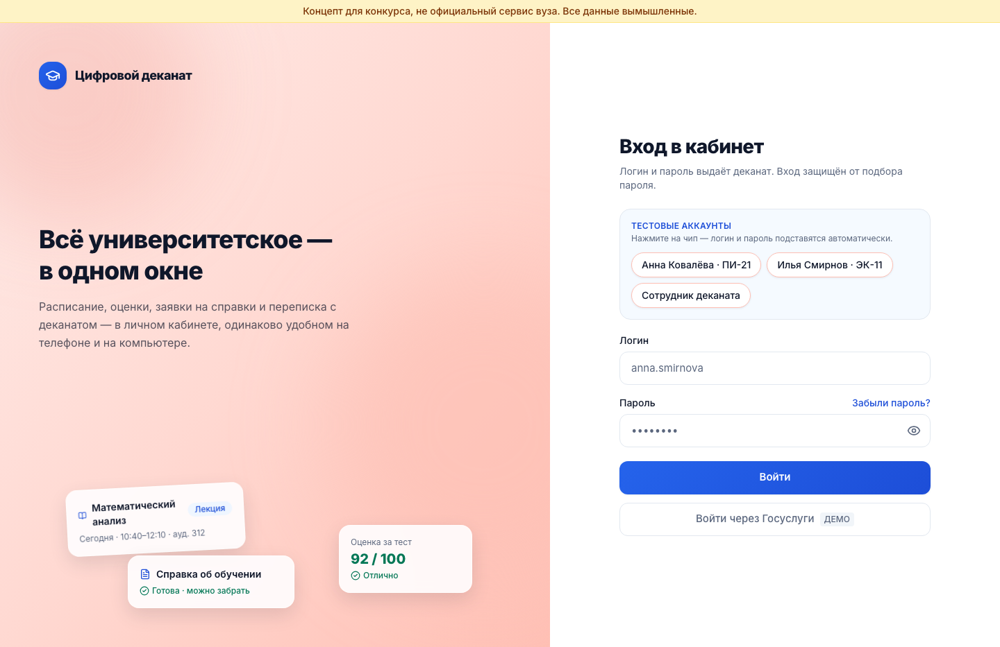
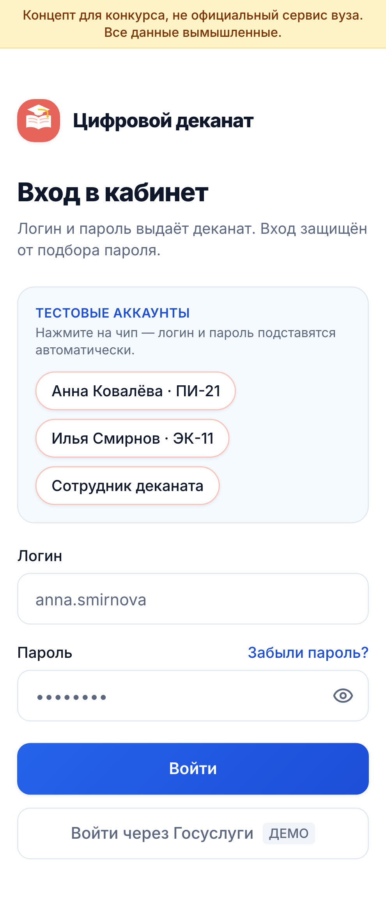
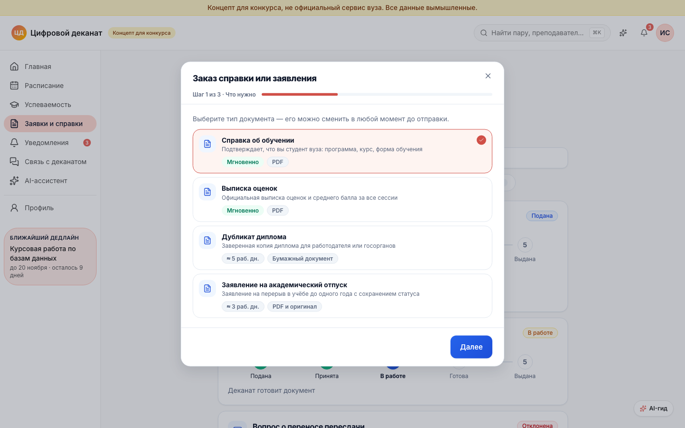
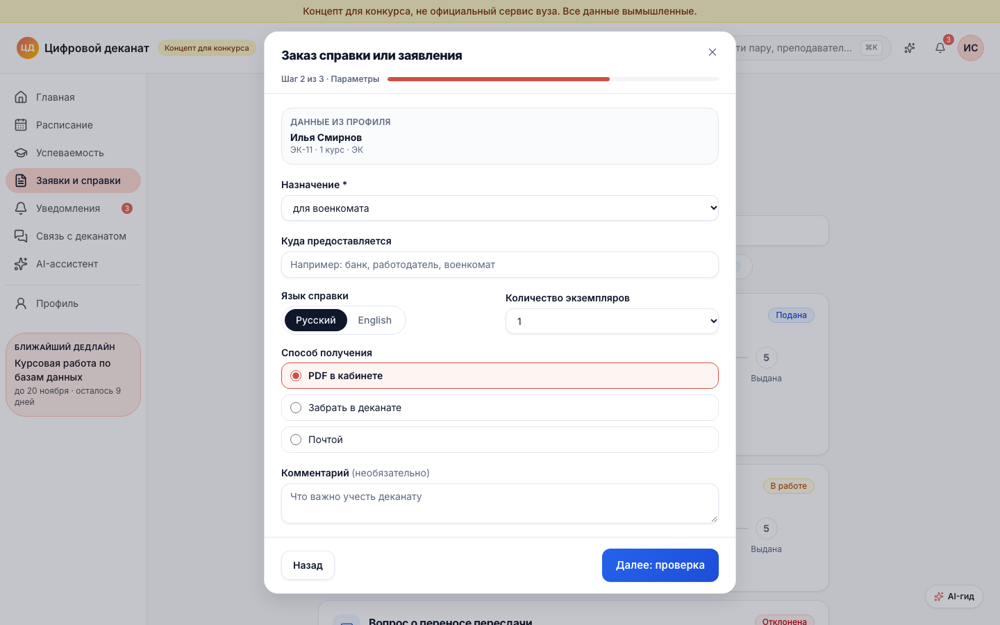
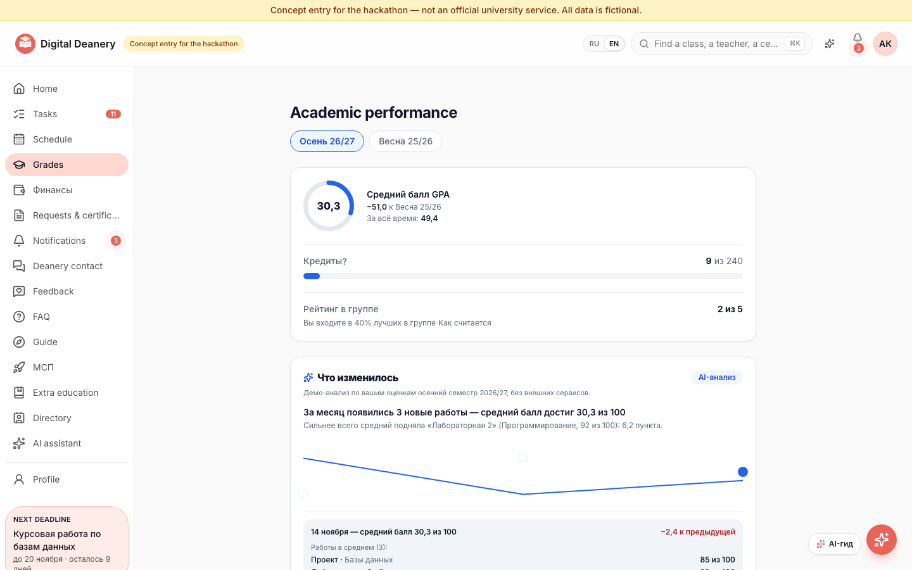
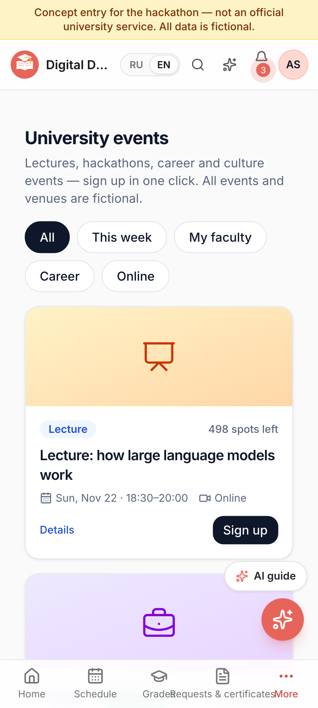

4.3. Готовый кабинет (RU, прод)






Лендинг, главная, расписание/успеваемость, заявки, AI-ассистент — «всё в одном окне».
Digital Deanery · описание процессастр. 7
Личный кабинет студента: учёба, документы, связь с деканатом — всё в одном окне
https://ostrovok.store · мобильный от 360 px · RU/EN
Описание процесса создания · собрано ИИ-агентами под контролем оператора
Ноябрь 2026 · ред. 2 (закрыт чек-лист задания: инструменты, промпты, скриншоты, защита) · прототип работает до 28.11.2026
Источники документа: журнал агентов docs/ai-log/ (77 файлов циклов), задачи Linear (команда DIG),
PR-описания (.task-board), история git. Все цитаты промптов и вердиктов — дословные.
Учебная жизнь студента разорвана между сервисами: расписание — на сайте вуза, оценки — в отдельной системе, справки — только через очередь в деканате, объявления тонут в чатах и почте. С телефона всё это особенно неудобно.
Альтернативная проработка вместо опроса:
Поэтому кабинет — один экран, где собрано: Расписание (день/неделя/месяц, переносы и отмены);
Успеваемость (баллы, зачётка, сессия, сводка «как у меня дела» с AI-динамикой); Заявки и справки
(онлайн-мастер, канонические статусы, PDF с QR-кодом проверки на /verify); Уведомления
(объявления, дедлайны, каналы); Связь с деканатом (обращения с чатом, для сотрудника — очередь с SLA);
сверх ядра: AI-ассистент по данным студента, MCP-сервер деканата, мероприятия, студенческие стартапы,
ДПО, финансы, люди, голосовой ввод, EN-версия, кабинет сотрудника. Принцип — «нужное за пару касаний»:
единый Shell-каркас, поиск ⌘K, скелетоны загрузки.
| Инструмент | Роль в проекте — для чего именно |
|---|---|
| OpenCode (CLI-агент executor, модель GLM-5.3-flash) | Основная разработка кода: постановщик пишет промпт-задачу, агент читает репозиторий, пишет код и тесты red-first, openspec-изменения, прогоняет гейты, открывает PR. |
Роевой конвейер на OpenCode (scripts/swarm/) |
Автопилот: supervisor → orchestrator берёт задачу Linear → executor → гейты (lint/typecheck/test/build, без LLM) → reviewer-агент (свежий контекст) → security-агент → documenter → squash-PR → Linear Done. Оператор сводит спорные решения. |
| GLM-5.3-flash (Z.ai) | Модель всех агентов: код, ревью, security, документация, EN-перевод. |
| Higgsfield (MCP-генерация изображений; модели Recraft V4.1 Flash, Z Image) | Дизайн и иллюстрации: 6 векторных иллюстраций пустых состояний и hero экрана входа (WebP ≤ 25 КБ), OG-превью 1200×630, обложка PDF-описания, стилевая проба логотипа (z_image) — промпты сохранены в docs/ai-log/assets.md. |
| sharp + SVG | Текстовые оверлеи поверх сгенерированного арта: OG-превью и обложка PDF (заголовок, плашка). |
| Linear + Linear MCP | Бэклог: 125 задач (DIG-1…125), 100 закрыто (Done), 10 отменено. Статусы меняет оркестратор, оператор ставит задачи «текстом требования». |
| Playwright (MCP/CLI) | e2e-регресс «роль × язык», скриншоты для документации (64 шт. RU/EN в docs/shots), запись видео-сценариев, EN-аудит кириллицы, регресс прода, печать этого PDF. |
| Context7 MCP | Актуальная документация Next.js 15 / Prisma / Tailwind при постановке задач — устаревшие API ловятся до кода. |
| GitHub + gh CLI | Ветки, PR (83 слито), squash-merge, ревью-комментарии агентов, публичный репозиторий для жюри. |
| Timeweb Cloud API | Хостинг прод-сервера в РФ (без VPN), включение/перезагрузка сервера из агента при инцидентах. |
| Docker Compose + Caddy | Прод: app/db/caddy, health-check, TLS (Let's Encrypt). |
| ffmpeg + macOS say (TTS) | Видео-демонстрация RU/EN 1080p: склейка сцен, озвучка (Milena/Samantha), титры-плашки. Длительности проверены ffprobe (RU 3:00, EN 1:25). |
| pptxgenjs | Генерация презентации проекта. |
| Figma | Референс-макеты экранов (дизайн-токены DIG-13: Inter, палитра, радиусы, тени). |
| Стек прототипа | Next.js 15 (App Router, RSC, Server Actions), TypeScript, Prisma + PostgreSQL, Tailwind CSS + дизайн-токены, сессии на __Host-cookie, argon2id, lucide-react, Vitest + Playwright. |
IDE агентов — OpenCode (CLI); человек работает в обычном редакторе и терминале. Все LLM-роли — одна модель GLM-5.3, независимость ревью обеспечивается свежим контекстом, а не разными моделями.
Формат «ЗАДАЧА / Что делаем / Ограничения / DoD» выработан эмпирически: агент перестаёт «додумывать»
требования и возвращает дифф по контракту. Полные диалоги — в журнале docs/ai-log/ и тредах Linear.
Оркестратор (обычный Node, без LLM) не доверяет агентам на слово: ревью без строки VERDICT:
трактуется как RETURN, security без SECURITY_VERDICT — как FAIL; красные гейты
возвращают исполнителю хвост вывода тестов; максимум 3 раунда. Если ревьюер «забыл» вердикт — запускается
отдельный VERDICT CLERK: «Называет ли анализ блокирующие дефекты? Печатай РОВНО одну строку:
VERDICT: ACCEPT или VERDICT: RETURN».
docs/ai-log/assets.md)Единый стиль-суффикс (палитра DIG-13, «flat vector, no text») добавлялся ко всем 6 иллюстрациям — серия вышла согласованной без дизайнера. Результат того самого промпта — hero-иллюстрация экрана входа в продакшене:
EN-локализация (DIG-87…93) шла тремя частями с авто-аудитом: агент-переводчик → Playwright-аудит «кириллица на EN» по всем маршрутам → список остатков новой задачей → следующий агент. Аналогично P0-регресс: 20 багов из чек-листа → отдельные задачи с фиксами и тестами red-first.







Лендинг, главная, расписание/успеваемость, заявки, AI-ассистент — «всё в одном окне».




EN-интерфейс: лендинг, главная, успеваемость, мероприятия. Проверка — Playwright-аудит «кириллица на EN» по всем маршрутам.
Честная история — не только зелёные гейты. Четыре реальные неудачи из журналов (docs/ai-log/, git)
и то, как система их ловила. Панели — дословные выдержки, воспроизведённые типографикой.
ecfe95e, 39253ac.
Они сохранились как объекты git, но после reflog-restore в историю веток не входят
(висячие): в git log их нет, проверить — git cat-file -p ecfe95e.
Урок: ревью читает и УСТАРЕВШИЙ дифф, если ему его подсунуть —
свежий дифф регенерируется перед каждым раундом.Четыре раунда диалога «замечания с файлами и строками → исправления» — и дифф дошёл до ACCEPT.
Красный тест — сигнал, а не помеха: нестабильность оказалась багом безопасности. Схожие ловушки из runbook: TZ-флейк «20↔21 ноября» на полночи МСК (фикстура детерминирована), rate-limit модели GLM 5h (оркестратор: cooldown + повторы).
Squash-merge ветки с устаревшей базой прошёл без конфликтов, но рабочее дерево осталось неполным:
свежесмерженные файлы фич DIG-93/100/102/103 потерялись. Оператор заметил при вычитке, вернул файлы
из состояния c2a331a (PR #81) и пересохранил фичи DIG-101 патчем. Урок: после squash —
контрольный diff дерева против предыдущего main до деплоя.
@node-rs/argon2). Даже при вводе несуществующего логина система делает такую же
«пустую» проверку, чтобы нельзя было перебором узнавать логины.__Host-session-кука (строгие флаги, только HTTPS,
только этот домен). «Выйти» стирает куку у пользователя; middleware не «продлевает» куку на фоновых
prefetch-запросах — эту гонку нашли регрессом и закрыли тестом (DIG-77)..env на сервере (в git не попадают, есть
.env.example только с именами переменных). MCP-токены студентов хранятся только как
SHA-256-хэш; выпуск токена — самим студентом в Настройках./verify ограничены rate-limit'ом по IP.https://ostrovok.store/api/health (сценарий — docs/wiki/RUNBOOK.md). --exclude .env обязателен: серверные секреты не перетираются.docs/submission/build-pdf.mjs: HTML → Playwright Chromium → A4) и финальная вычитка.Тестовые аккаунты для жюри (данные вымышленные, чипы на экране входа):
студент 1 — anna.smirnova / anna-demo-2026,
студент 2 — ilya.petrov / ilya-demo-2026 (данные студентов разделены:
чужая заявка даёт 404), сотрудник деканата — dean.kovaleva / dean-demo-2026
(кабинет /staff).
Прототип: https://ostrovok.store (из РФ без VPN) · Исходный код: публичный GitHub-репозиторий · работает до 28.11.2026.
docs/ai-log/
(81 запись в каталоге = 77 файлов циклов + README, _TEMPLATE.md, assets.md и
assets-src/ — они не циклы); salvage-коммиты из секции 5.1 — git cat-file -p ecfe95e
(висячие объекты, в истории веток не входят); промпты иллюстраций — docs/ai-log/assets.md;
схема роя — docs/ai-process.md
и scripts/swarm/README.md; деплой и инциденты — docs/wiki/RUNBOOK.md;
QA по брифу — docs/qa/2026-11-20-brief-compliance.md; история git — публичный репозиторий.
Концепт для конкурса «Цифровой деканат будущего». Все данные вымышленные,
подключений к реальным системам вуза нет. Документ собран ИИ-агентами (OpenCode + GLM-5.3-flash)
под контролем оператора; иллюстрации бренда — Higgsfield (Recraft V4.1 Flash / Z Image), промпты —
в docs/ai-log/assets.md. Шрифт Inter (OFL).